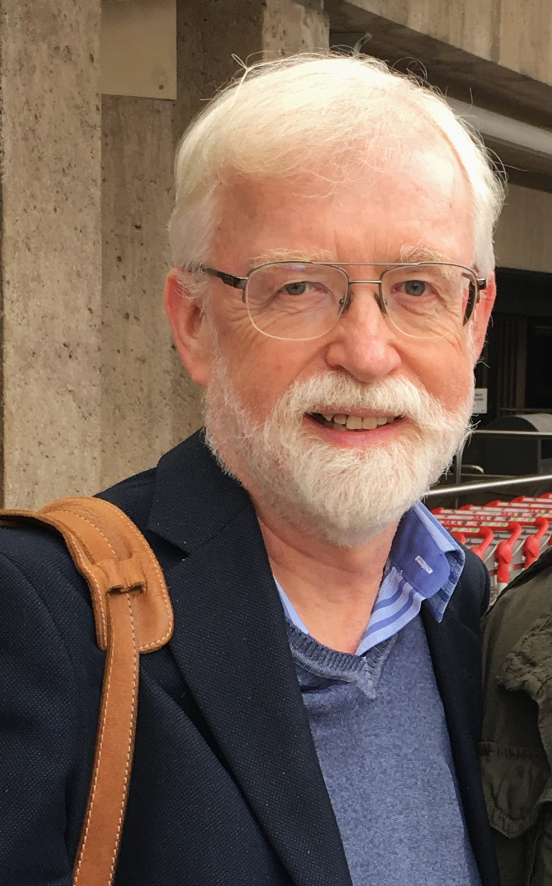
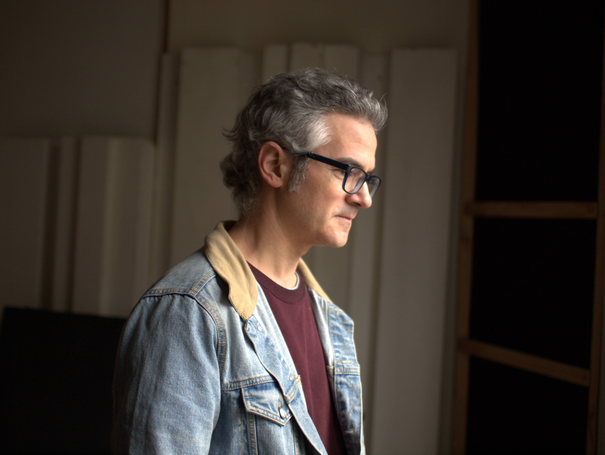
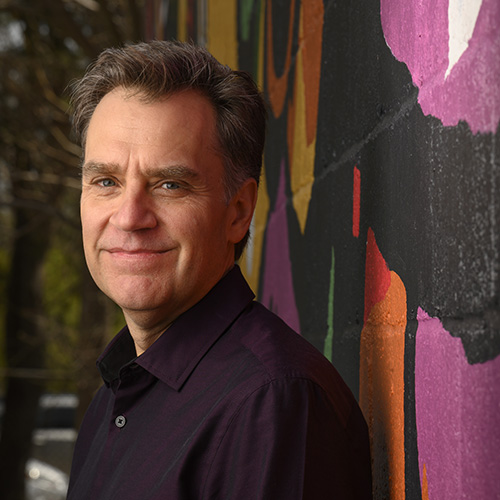

Program Notes

Re:enact
Program Note
Re:enact was composed for a video by artist Ronald Amstutz. Having worked, over the years, with many dancers and choreographers, particularly Liz Gerring and Sally Silvers, I've had some experience putting sound to movement. Ron's video was created using stop action photography, every frame is set up in a painstaking process by the artist himself without assistants. I try to walk the thin line between working with and against the visuals; in this case the with won out.
The piece unfolds as a changing field of sustained tones, isolated attacks, and bands of noise. Brief events appear against near-silence, leaving resonances exposed. Fragments gradually connect, gathering weight and spectral breadth until the work enters a central mass. Low frequencies provide a shifting foundation while details flit across the quadraphonic field, mimicking the shifting light of Ron's video.
Bio
Michael J. Schumacher is a Brooklyn-based composer who has worked at the intersection of spatialized sound and algorithmic composition since the late 1980s. He is best known for long-form, multichannel, generative "Room Pieces" presented in galleries, museums, concert halls, and domestic settings. XI Records released a DVD of five of his sound installations as computer applications. Other notable projects include Living Room Pieces, a generative installation for home listening, and the Portable Multichannel Sound System, a suitcase-scale immersive rig with which he has toured the U.S., Europe and Japan. Schumacher's music has been presented by GRM (Paris), Roulette, Issue Project Room, Artists Space, Ostrava Days, Transmediale, Klangraum Krems, and The Dream House, among others. Releases appear on Superpang, XI Records, Sub Rosa, Entr'acte, Quecksilber, and Sedimental.

When The Earth Mourned For Me (2024)
Program Note
With each passing day, we see evidence of our deteriorating environment and that evokes in us a personal and collective grief. We mourn for the earth, but if we listen to its cries, does it also mourn for us, the instigators of its demise? This piece invites us to listen to the voices of the earth that may emerge even from what we have extracted from it. The journey proceeds in four overlapping sections: Choir, Lament, Anguish, and Threnody.
This work, the last in a trilogy of recent pieces, attempts to blur the distinction between natural and human sounds through hybridizing material from both sources, based on three of the primary elements – water, wind and earth. In the current ecological crisis, we may come to understand ourselves as an integral part of our environment that we need to respect.
Bio
Barry Truax is a Professor Emeritus in the School of Communication at Simon Fraser University. He worked with the World Soundscape Project, editing its Handbook for Acoustic Ecology, and has published a book Acoustic Communication, that deals with sound and technology. In 1991 his work, Riverrun, was awarded the Magisterium at the International Competition of Electroacoustic Music in Bourges, France. Truax's multi-channel soundscape compositions are frequently featured in concerts around the world. In 2015-16 he was the Edgard Varèse Guest Professor at the Technical University in Berlin. He was given an Honorary Doctor of Fine Arts in 2025 at SFU. Website: sfu.ca/~truax
Cross-Pollination
Program Note
Cross-Pollination is an electronic music composition inspired by the analogies found in nature's cross-pollination process. Composer blends bee recordings, modular synthesis, and granular synthesis. In the composition, bees play a vital role as carriers of pollen to both the granular synth and the modular synth. Their buzzing becomes the link between nature's cross-pollination and the digital-analog fusion of sounds. As we listen, we are immersed in the sounds the bees create, resonating with the intricate connections between nature and technology. The composition celebrates the interconnectedness of these elements, creating a sonic experience.
Bio
Dr. Zeynep Özcan is an experimental and electronic music composer, sound artist and performer. She is an Assistant Professor and a faculty director of Girls in Music and Technology (GiMaT), Summer Institute and SMART (Sound and Media Art) Lab, at the Department of Performing Arts Technology at the University of Michigan, School of Music, Theatre & Dance. Her creative and scholarly work focuses on software systems for music-making, audio programming, sonification, sensors and microcontrollers, novel interfaces for musical expression, and large-scale interactive installations. Her research explores bio-inspired creativity, artistic sonification, playfulness and failure in performance, and activist art. Her works have been performed and presented internationally at concerts, exhibitions, and conferences, including AES, ICAD, ICMC, ISEA, NIME, NYCEMF, WAC, and ZKM. In 2024, she founded Spaceout International Ambisonics Festival.

Estudio Sobre lo Ínfimo (2025)
Program Note
The work is built from short audio samples of a cello, characterized by limited dynamic range. It uses sound recordings that include unintended noises and extraneous sounds commonly present during instrument recordings. From this "discarded" and "useless" material, the musical composition emerges. The goal is to emphasize what is typically excluded—those elements we do not want to hear—while acknowledging that they are still an intrinsic part of sound and music.
Bio
Guillermo Eisner Sagüés (Uruguay, 1980) holds a Doctor in Music Composition from the Universidad Nacional Autónoma de México (UNAM). He has developed acoustic and electroacoustic concert music, participating in festivals in South America, North America and Europe. In 2021 he released the CD Música para guitarra (Chile Clásico). In 2019 he released the acoustic recording música de barrio (Cero Records) on CD. In 2017 he premiered the chamber opera Titus at the Teatro Helénico in Mexico City. In 2015 he published the book and CD guitarrerías. 10 monotemas para guitarra (Microtono Editions) and premiered the chamber opera La Isla de los peces at the GAM Cultural Center in Santiago (Chile). In the year 2012 he released the electroacoustic music recording habitar el tiempo on CD. Since 2019 he is a full-time professor in the Department of Sound of the Faculty of Arts at the Universidad de Chile.

Unlocking the Keys (2021)
Program Note
Unlocking the Keys (2021) is a fixed media Ambisonic work that explores three dimensional sonic space. The title serves as a metaphor for searching out (i.e., "unlocking") the potential of sounds created from recorded piano sources, which start out abstract in nature and fully reveal themselves in the middle of the piece. While the ideal listening experience for this piece is a periphonic sound system (a three dimensional configuration of speakers such as "dome" or 8-channel "cube"), the version provided here (stereo) preserves all of the musical material, mapping it down organically to a two dimensional listening space.
Bio
The music of American composer Mikel Kuehn (b. 1967) has been described as having "sensuous phrases… producing an effect of high abstraction turning into decadence," by New York Times critic Paul Griffiths. He has received awards and honorable recognition from ASCAP and BMI, the Chicago Symphony Orchestra, Composers, Inc. (Lee Ettelson Award), the Copland House (Aaron Copland Award), the Destellos Foundation (Argentina), the Alice M. Ditson Fund of Columbia University, Eastman (Hanson and McCurdy Prizes), the Flute New Music Consortium, the Guggenheim Foundation (2014 Fellowship), the League of Composers/ISCM Composers' Competition, the Salvatore Martirano Memorial Composition Contest, the Ohio Arts Council, and the Luigi Russolo Competition (Italy). From 1998 to 2023 Kuehn was Professor of Creative Arts Excellence at Bowling Green State University where he served as director of the MidAmerican Center for Contemporary Music and the Bowling Green New Music Festival from 2007-2010. He received degrees in composition from the Eastman School of Music (PhD, MA) and the University of North Texas (BM) and is author of the computer music application nGen. In fall 2023 he joined the Eastman School of Music composition faculty where he also directs the Electroacoustic Music Studios @ Eastman (EMuSE). Learn more at mikelkuehn.com.